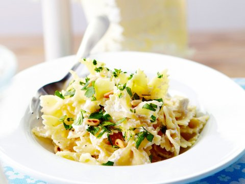

Pasta gremolata met ricotta

ingredienten
- 500g farfalle
- 1 el pijnboompitten
- 1 teentje knoflook
- 1 cintroenschil
- 250g ricotta
- Handje bladpeterselie
Bereiding
- Kook de pasta beetgaar in een ruime hoeveelheid gezouten water
- Snipper de peterselie in de knoflook. Vermeng ze met de geraspte citroenschil
- Schep de ricotta door de warme pasta en verdeel over de borden. Bestrooi met de gremolata en werk af pijnboompitten